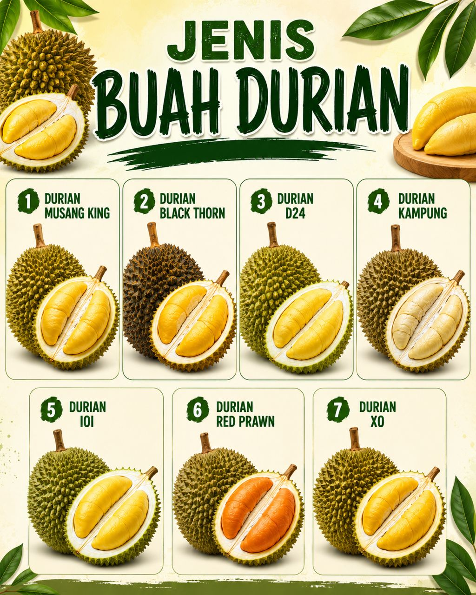

HISTORY
Durian is a tropical fruit that comes from Southeast Asia, especially Borneo and Sumatra. It has been grown and eaten for a very long time in countries like Malaysia, Thailand, Indonesia, and the Philippines. Long ago, local people already knew and ate durian before it became known to the world. European travelers in the 15th century, such as Niccolò de’ Conti, wrote about this fruit when they visited Asia. Today, durian is very famous and is called the “king of fruits” because of its strong smell, unique taste, and high value in the market

TYPES OF DURIAN
- Durian Musang King
- Durian Black Thorn
- Durian D24
- Durian Kampung
- Durian IOI
- Durian Red Prawn
- Durian XO
HEALTH BENEFITS
- provides instant energy
- support health digestion
- boosts the immune system
- helps regulates blood pressure
- bContains antioxidants that protect body cells
HOW TO GROW DURIAN
1. Choose Good Seeds
-Select healthy seeds from a ripe and high-quality durian fruit.
2. Prepare the Soil
-Use fertile, well-drained soil and add compost for better growth.
3. Plant the Seedling
-Plant the seed or seedling in a suitable location with enough sunlight.
4. Care for the Tree
-Water regularly, apply fertilizer, and protect the tree from pests and diseases.
5. Harvest the Durian
-Harvest the durian fruits when they are fully mature and ready to eat.
FUN FACTS
- Spiny shell – Durian is the “king of fruits,” big and spiky, with creamy inside.
- Forbidden fruit – Durian smells very strong and is banned in some public places.
- Smell to survive – Its smell attracts animals to help spread its seeds.
- Highly nutritious – Durian is rich in vitamins and healthy fats.
- Varying opinions – People either love or hate durian.